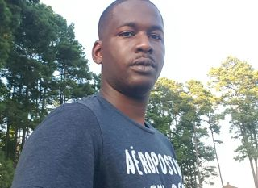

My Bio

Brent Thomas Taylor II (April 1990 to Present), known to most of
his friends by the moniker "Peanut". I'm a junior at the University of Nebraska at Omaha majoring in
management information systems with a minor in IT Innovation. I love being a student learning is
a passion of mine ever since I was a kid. I look forward to my tenure at UNO.
I am a moderate gamer, mostly playing FPS's, MMORPG's, I love music it is pretty much my life. I listen
to all kinds of music but my favorite is classic rock beyond a reasonable doubt. I love hair rock I could listen
to it for hours at a time. Before deciding to enroll back into college I was a DJ part time catering party's
while working at night at gentlemens clubs.
I am also a veteran of the United States Marine Corps. Serving 8 years, I have traveled to countries like
The Philippines, Singapore, South Korea and many more. I am no stranger to different languages
though not fluent I know enough Spanish to be able to get by. I am a hugh fan of different cultures and
love to travel the world.
My Education
Besides being in my junior year working towards my BS in management Information Systems. I am certified to work on wind turbines
on top of being able to work on cell towers. I attended a trade school called Airstreams Renewables Inc.
My Recreational Activities
In my spare time I love working on computers. popping them open and modifying them. I am also a little bit of a gamer, Call of Duty
zombies is one of my favorite time passers. I also am not opposed to spending hours of a time playing the Sims 4, I like going through
entire generations of families. I used to be an avid fitness nut coming out of the military.
Also with my spare time I am a fan of the outdoors just not the cold. I like going to parks and watching nature, heartland park
is defenitly one of my favorite places to go in town. I like to go down there at night and watch the trains pass. It reminds me
of home, that being Nicholasville, KY. We had a lot a lof of train activity and as a kid it would always just sit around and
watch the trains.
My Favorite Quotes
Do What
Do what you have to do, to do what
you want to do.
Denzel Washington
Stand Up
Yeah, bad things will happen to you.
And you'll get kicked down a few times.
STAND UP!
- Henry Cavill
Don't Pray
Do not pray for easy lives.
Pray to be stronger men.
- John Fitzgerald Kennedy
Contrary
Contrary to popular belief,
I know exactly what I'm doing.
- Tony Stark